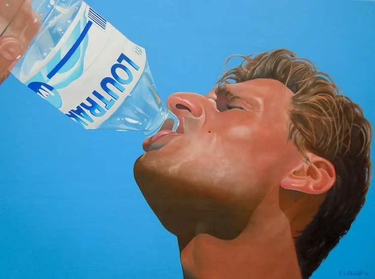
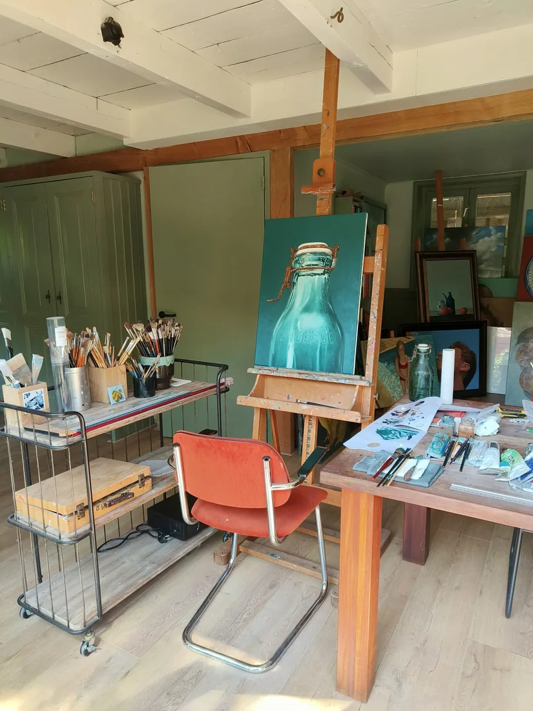

Over Ron
Ron Linthoudt

"Inspiratie gebeurt eigenlijk door van alles. Kortom: inspiratie is onuitputtelijk."
Ron Linthoudt
Ron Linthoudt werd in 1962 geboren in Haarlem. Al van kleins af aan tekent en schildert hij graag, blijkbaar zat er vroeg een creatieve geest in hem.
In de jaren '90 had hij een abstracte periode, waarin hij met acrylverf werkte. Het lukte hem toen niet om zijn gevoel over te brengen op het doek. Daarna stapte hij over op olieverf, en daar kon hij zijn artistieke inspiratie wél in kwijt. Achteraf bleek hij toch meer een realistische schilder te zijn, wat te zien is in zijn huidige werk.
Waar de inspiratie vandaan komt
Inspiratie komt van alles. Van het bezoeken van musea, maar ook van het bekijken van kerken, gebouwen en beeldhouwwerken in binnen- en buitenland. En vooral van alledaagse dingen: verstilde objecten, etenswaren, potten, glas, etc.
Dat verklaart de onderwerpen die door zijn werk heen lopen, bijvoorbeeld: uien, citroenen, aardbeien, asperges, percolators, olijfolie flessen, een oude petroleumkan.

Het atelier
Atelier aan huis

Ron werkt in zijn atelier aan huis aan de Dorpsstraat 709 in Noord-Scharwoude. Daar staat het werk dat te koop is, en daar worden bezoekers op afspraak ontvangen. Enkele schilderijen zijn ook te bezichtigen bij Kanis Kunst te Alkmaar.
Er is een goede reden om langs te komen: olieverf laat zich slecht fotograferen. De laagopbouw, de glans, de manier waarop het licht in de verf valt: dat ziet u alleen in het echt. Een schilderij dat op een scherm aardig lijkt, kan aan de muur volstrekt anders werken, en omgekeerd.
Daarom verkoopt Ron niet online. Een bezoek is vrijblijvend en op afspraak.